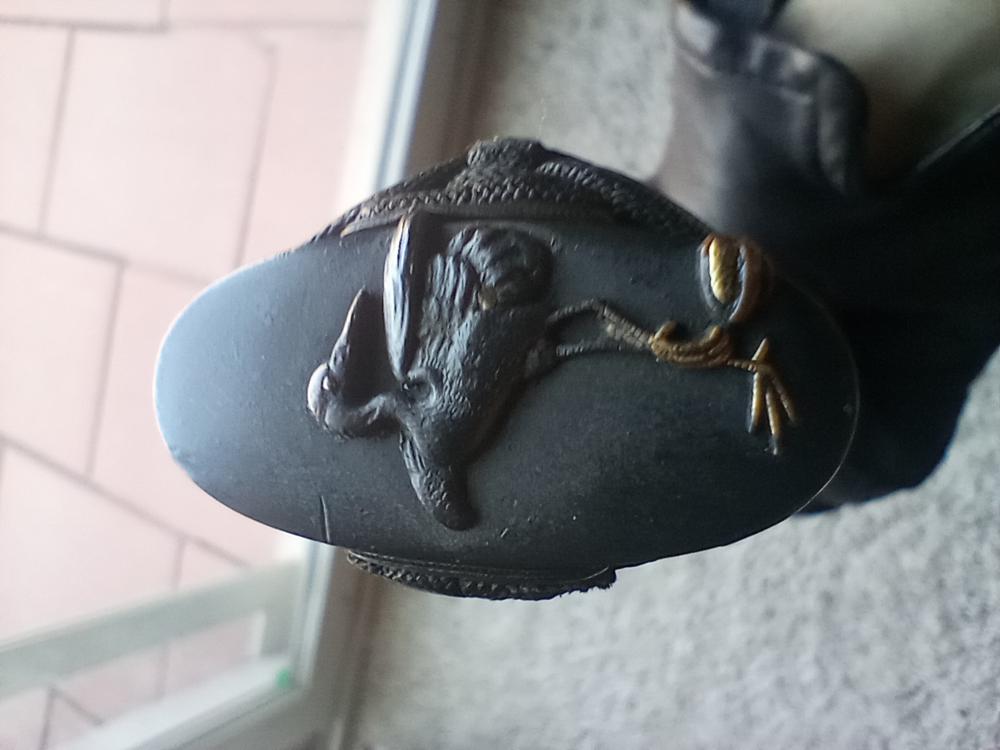
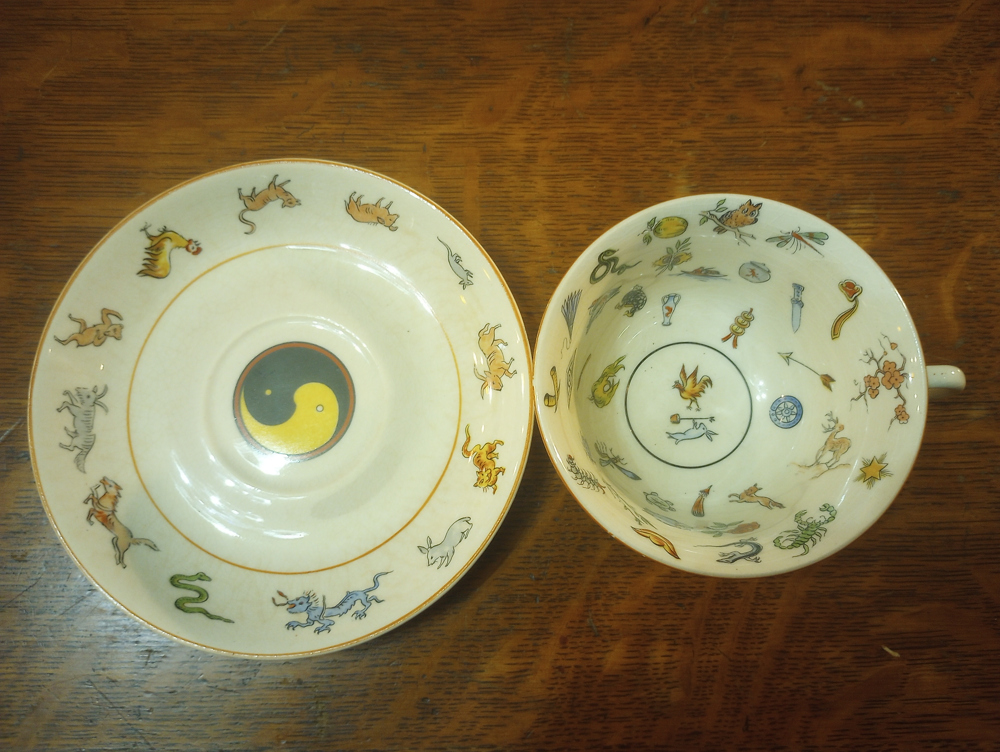
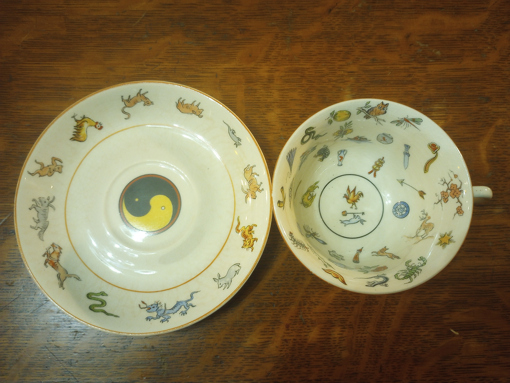
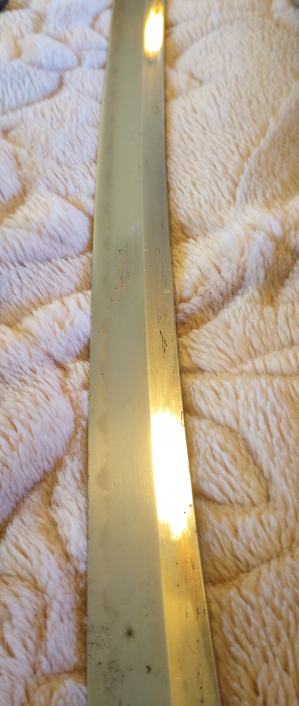
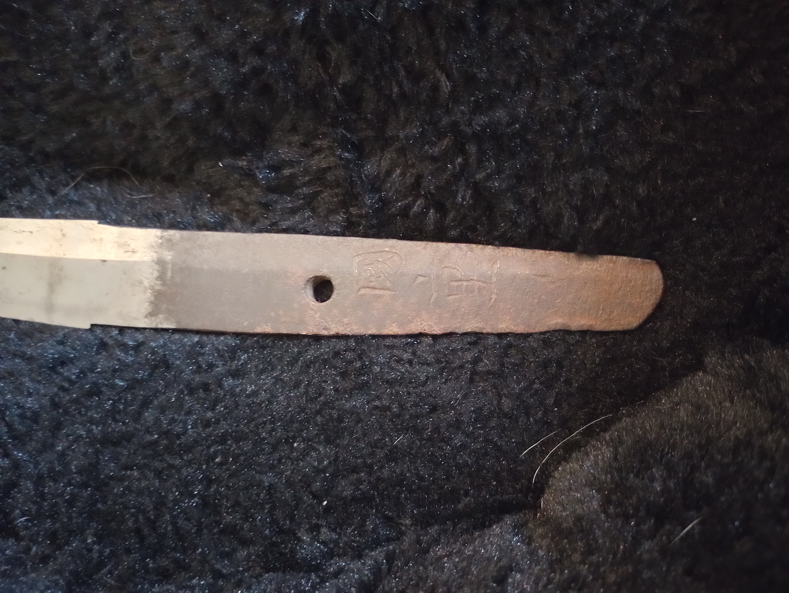
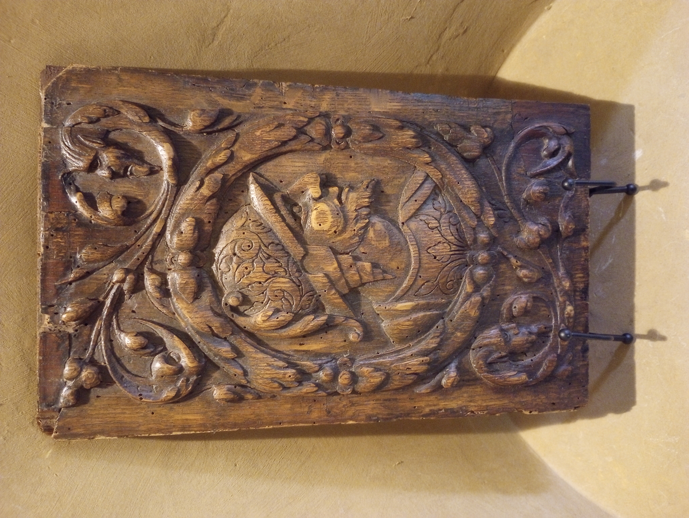
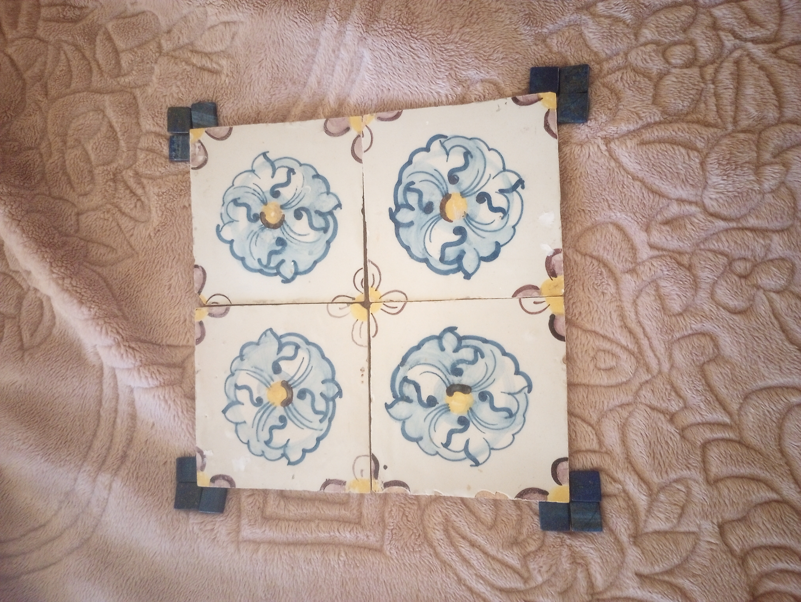
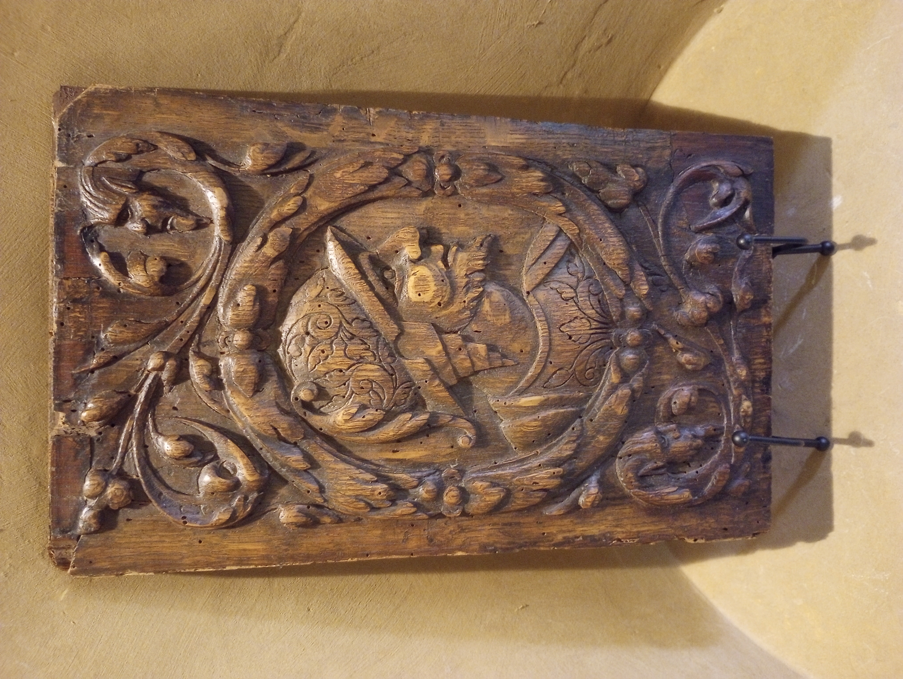
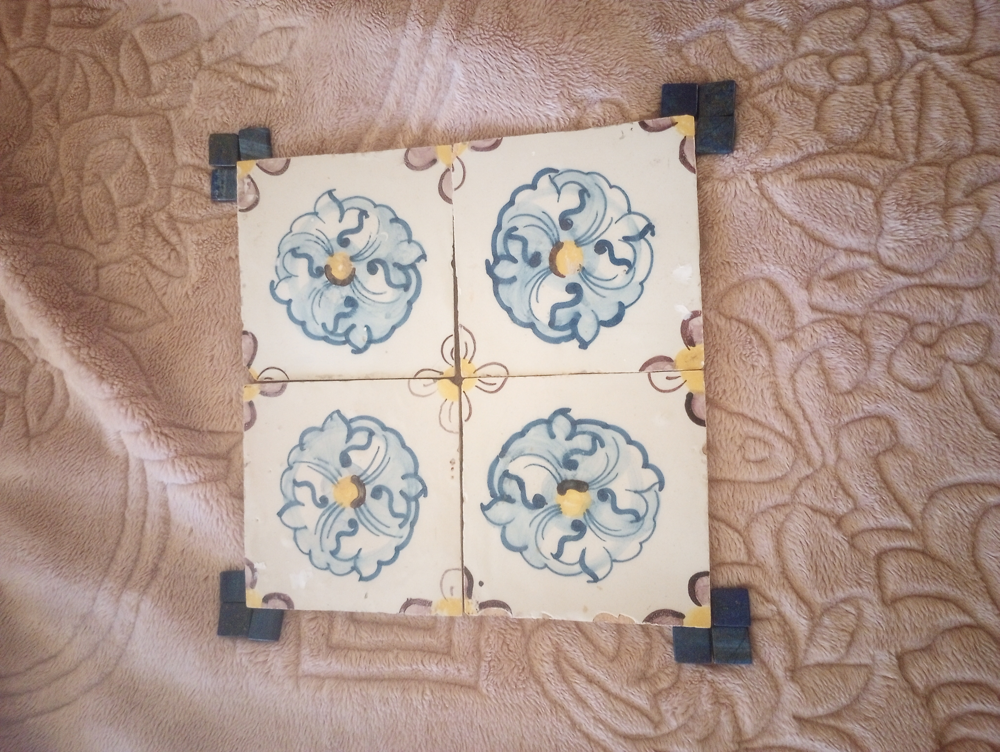

The earliest owner of this sword that I can identify with any certainty is Josephine Wimsatt, the daughter of a gilded age lumber magnate in Washington, DC. According to family tradition, she received the sword as a gift from a suitor. Assuming she had reached adulthood but not yet become engaged, she would have received the sword sometime between 1906 and 1916. In 1960 Josephine Wimsatt and her husband Lenox Lohr hosted then-Crown Prince Akihito and Princess Michiko at the Museum of Science and Industry in Chicago.


A red-crowned crane is featured on the shakudo kashira, while the shakudo menuki appear to feature blooming suisen, also known as narcissus or daffodil. The tsuka is wrapped in the moro tsumami-maki style over white same, also known as shagreen or rayskin. A blossoming plum tree and what appears to be a scholar’s stone are featured on opposite sides of the shakudo fuchi.



The ji-sukashi openwork iron tsuba features a shochikubai, or “three friends of winter”, motif including plum blossoms, pine needles, and bamboo leaves. The rusted tsuba has traces of gilding remaining, and the kitsu-ana holes for a kozuka byknife and kogai hairpin appear to have been plugged with shakudo. There are gilded copper seppa above and below the tsuba. The habaki is silver foiled and features cat-scratch or rain pattern filework.


Josephine Wimsatt’s older sister, Genevieve Wimsatt, referrenced the signifcance of the crane and Three Friends of Winter motifs in her 1927 book A Griffin in China: “Scattered branches of the Prunus, one of the Three Friends, including pine and the bamboo, that defy the cold and laugh at the winter winds… The crane is the bird of longevity, and longevity is the boon most coveted” (pp. 160-161, 246). Genevieve also patented a fortune telling teacup based on her studies of Chinese folklore and commanded the Petticoat Cavalry at the 1913 Woman Suffrage Procession in DC.

 


The blade length is approximately 25.5 inches and the total length in full koshirae is approximately 34.5 inches. It features a shinogi zukuri cross-section with an iorimune “ridged” spine and koshi sori curvature.


The blade features a conspicuously short nakago typical of one handed katateuchi swords adapted to the massed infantry battles of the Sengoku period, with a two-character nijimei signature that reads "Kunishige". The fact that the signature is on the left side of the nakago when held upright is also an indication that the blade was originally designed to be worn edge up as a katana (rather than edge down as a tachi) which is consistent with the current fittings and the katateuchi style of blade.


Kunishige is a rather common moniker for Japanese swordsmiths, but given the blade is of a style typical of the 15th and 16th centuries, the best match I have been able to find is the Ko-Mizuta school of swordsmiths. Of course, the signature could be a forgery, as this was a common practice throughout Japanese history in order to inflate the value of even high quality unsigned blades by tying them concretely to famous makers


The saya is missing its original kurikata and koiguichi, possibly a result of being retrofitted for a leather scabbard covering which was later removed so as to reveal the lacquerwork, though I have not been able to confirm this. The absence of the koiguichi in particular has led the fragile mouth of the saya to deteriorate and split along the spine. As a temporary measure to forestall further damage, I created a paper splint around the mouth of the scabbard. The mon featured in gold as a repeating pattern is a Maru ni Mitsu Kashiwa, comprising three daimyo oak leaves inside a ring, which complements the Three Friends of Tsuba motif on tsuba as it represents eternal growth. The variant of Maru ni Mitsu Kashiwa seems to be most prominently (though not exclusively) associated with the Makino clan (the mon associated with the Mitsubishi zaibatsu evolved from a variant of the same symbol featuring narrower leaves).


The defeat of the Makino daimyo of Nagaoka Domain by Imperial forces in the Hokuetsu War of 1868, followed by the de facto opening of the de jure treaty port of Niigata to foreign trade the following year, may provide a plausible explanation for how the sword found its way into American hands, while also accounting for the mon and winter imagery featured on the koshirae. Interestingly, among the samurai who died fighting on behalf of the Makino Daimyos as a result of the Hokuetsu War was Yoshimichi Yamamoto, whose heir Isoroku Yamamoto would arrive in Washington DC as a Naval Attache in 1925, shortly after the marriage of Josephine Wimsatt and Lenox Lohr in the same city.


The blade is also a remarkably good fit for a World War II era military scabbard given that it appears to have been forged several hundred years earlier, but this makes an odd sort of sense in light of the similar demands of the Sengoku Jidai and the Second World War. Before the Sengoku period, swords were primarily tailored to the needs of cavalry combat, and in the Edo period that followed, swords were primarily a peacetime sidearm. However, during the wars of the 15th and 16th centuries, with the rise of the ashigaru footsoldier alongside the introduction of Portuguese firearms, massed infantry battles were the norm, and indeed, in the Second World War, soldiers on foot once again required a blade suited to their needs.

The base of this makeshift kake, or sword stand, originates from a late 17th or early 18th century teak frame of a doorway built into a church in the Indo-Portuguese colony of Goa. The Governor of Portuguese India in Goa was responsible for assigning a captain general of the annual Japan Voyage in the years between 1550 and 1639.
 


